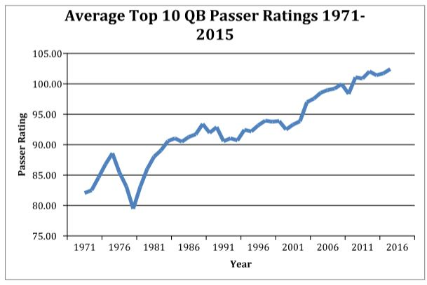

Who’s the best quarterback ever? Tom Brady? Peyton Manning? Joe Montana? Was Matt Ryan better in 2016 than Dan Marino ever was? This is a common argument across sports bars and fan bases across the country, where fans make cases for their team’s idol to be enshrined at the top of football’s ultimate podium. In this article I take an analytical approach to settling the age-old football debate, comparing how good each quarterback was relative to contemporary competition.
Before we start, we have to define what makes a good quarterback. The best quarterbacks throw lots of touchdowns, pass for lots of yards and throw few interceptions. The NFL uses passer rating, a metric that take these statistics into account as well as the number of attempts he had to throw the ball. This will be our starting point.
One approach to ranking the best quarterback seasons would be to compare their passer ratings. The issue with that is that the game is constantly evolving; today’s quarterbacks throw more short passes with higher completion rates, while cornerbacks are more frequently flagged for holding and pass interference. Factors such as these have resulted in a dramatic increase in passer ratings since the AFL-NFL merger:

This ranking would exclude great quarterbacks of earlier decades. During the 1970s, for instance, top quarterbacks often had a passer rating of less than 90, while today that is below average. In fact, out of the top 20 quarterbacks by career passer rating, just two of them retired before 2009. This method hardly seems fair.
Instead my approach was to compare elite quarterbacks to other top passers from their time. For every year since the merger, I compared each quarterback’s season to the top ten quarterback seasons from the five years surrounding it. For example, I compared Tom Brady’s historic 2007 season with the top ten quarterbacks in the league between 2005 and 2009. Using these data, I produced a standardized score for each quarterback’s season performance based on passer rating. A standardized score is a way of quantifying how well each quarterback was passing relative to other quarterbacks of the same era. Thus, I was able to account for the effect that the ever-changing rules and strategies of football had on quarterbacks. The top 25 quarterback seasons according to this methodology are listed below:
| Rank | Quarterback | Season | Standardized Score |
| 1 | Steve Young | 1994 | 3.45 |
| 2 | Peyton Manning | 2004 | 3.03 |
| 3 | Dan Marino | 1984 | 2.75 |
| 4 | Tom Brady | 2007 | 2.74 |
| 5 | Aaron Rodgers | 2011 | 2.70 |
| 6 | Matt Ryan | 2016 | 2.35 |
| 7 | Kurt Warner | 1999 | 2.29 |
| 8 | Steve Young | 1992 | 2.21 |
| 9 | Ken Stabler | 1976 | 2.09 |
| 10 | Peyton Manning | 2013 | 2.03 |
| 11 | Bert Jones | 1976 | 1.99 |
| 12 | Joe Montana | 1989 | 1.95 |
| 13 | Randall Cunningham | 1998 | 1.91 |
| 14 | Joe Montana | 1989 | 1.95 |
| 15 | Steve Young | 1997 | 1.84 |
| 16 | Ken Anderson | 1981 | 1.81 |
| 17 | Daunte Culpepper | 2004 | 1.75 |
| 18 | Tony Romo | 2014 | 1.72 |
| 19 | Tom Brady | 2016 | 1.56 |
| 20 | Aaron Rodgers | 2014 | 1.56 |
| 21 | Tom Brady | 2010 | 1.54 |
| 22 | Steve Young | 1993 | 1.42 |
| 23 | Ken Anderson | 1974 | 1.36 |
| 24 | Roger Staubach | 1979 | 1.34 |
| 25 | Jim Harbaugh | 1995 | 1.31 |
Steve Young’s 1994 season ranks as the greatest by a substantial margin. In this season, his passer rating was 112.1. Even by today’s standards that score is high, and during that season it was more than 20 points higher than any other quarterback. It stood as the highest for ten years until Peyton Manning broke it in 2004, the second best season on the list. Other top seasons include Dan Marino’s 1984 season, when he passed for a record 48 touchdowns that stood for 20 years and Tom Brady’s undefeated 2007 season. Matt Ryan’s 2016 season ranks 6th behind Aaron Rodgers’ 2011 season when he set the single-season passer rating record of 122.5. Most importantly, this ranking fairly represents all quarterbacks since the merger, with each decade having at least four quarterbacks on the list.
I also sought to answer the question of who is the best quarterback of all time. My approach here was to average each quarterback’s season standardized scores I computed in the previous section. Only quarterbacks who have completed five seasons were eligible. For quarterbacks with long careers, I only considered their top eight seasons to give them an advantage over less accomplished quarterbacks. Note that many of even the best quarterbacks here have negative standardized scores, because my method compares each of their seasons to the best quarterbacks in the league each year.
| Rank | Quarterback | Average Standardized Score | Year Retired |
| 1 | Steve Young | 1.59 | 1999 |
| 2 | Peyton Manning | 0.89 | 2015 |
| 3 | Joe Montana | 0.78 | 1994 |
| 4 | Aaron Rodgers | 0.69 | Active |
| 5 | Tom Brady | 0.55 | Active |
| 6 | Ken Anderson | 0.34 | 1986 |
| 7 | Dan Marino | 0.33 | 1999 |
| 8 | Drew Brees | 0.30 | Active |
| 9 | Roger Staubach | 0.24 | 1979 |
| 10 | Brett Favre | 0.15 | 2010 |
| 11 | Kurt Warner | 0.13 | 2009 |
| 12 | Fran Tarkenton | 0.03 | 1978 |
| 13 | Dan Fouts | -0.02 | 1987 |
| 14 | Ben Roethlisberger | -0.15 | Active |
| 15 | Bob Griese | -0.15 | 1980 |
| 16 | Tony Romo | -0.19 | 2016 |
| 17 | Dave Kreig | -0.23 | 1998 |
| 18 | Philip Rivers | -0.39 | Active |
| 19 | Russell Wilson | -0.43 | Active |
| 20 | Troy Aikman | -0.47 | 2000 |
| 21 | Boomer Esiason | -0.48 | 1997 |
| 22 | Bert Jones | -0.51 | 1982 |
| 23 | Randall Cunningham | -0.54 | 2001 |
| 24 | Jim Kelly | -0.55 | 1996 |
| 25 | Ken Stabler | -0.60 | 1984 |
Once again, Steve Young leads all other quarterbacks by a wide margin. He benefitted by being a backup quarterback under Joe Montana for several years, having time to gain experience. Although he only had ten qualifying seasons, four of them ranked among the top 25 ever. Other top quarterbacks such as Peyton Manning, Joe Montana and Tom Brady have all won multiple superbowls, while Aaron Rodgers has consistently been at the top of the game over the past several years.
One notable omission is Terry Bradshaw, the Steelers quarterback who won four superbowls in the 1970s. In fact, he ranked just 42nd on my list of 127 quarterbacks who played at least five seasons. He played well throughout his career, yet he never led the league in passer rating. Instead the Steelers’ reign of dominance can be explained by their infamous “Steel Curtain” defense. On the other hand, quarterbacks such as Tom Brady, Peyton Manning and Joe Montana contributed significantly to their teams’ dynasties.
As a Patriots fan, I was disappointed to see Tom Brady ranked fifth according to my methodology and below Peyton Manning and Aaron Rodgers. At least he has the most rings. Nevertheless, this analysis isolated each quarterback’s performance from the team he played on and fairly compare the most dominant quarterbacks of each era since the merger.